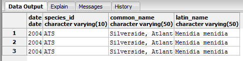

Structured Query Language (SQL)
Structured Query Language (SQL) is a computer programming language designed specifically for working with databases. While it varies somewhat between implementations, it is universal enough that it can be used in a variety of environments and systems. We learned the basics of SQL syntax for populating database tables and performing queries on the information they hold, which could then be turned into permanent views for use in applications.
Populating the Database
After setting up the database template, the next step was to populate it with data. In our case, the data had been provided as file of comma delimited values, so the population was fairly simple. We simply needed to run a line of SQL for each table in the database, which took the form: COPY tbl_name FROM 'C:/location/data.txt' Delimiters ',' CSV;
Order was important - tables needed to be populated according to their referential integrity. In other words, if a table relationship depended on information in another table, the other table needed to be populated first. Once this was done, the information in each table could be viewed in PgAdmin III, and could then be utilized in our applications. A sample table is below.
SQL Syntax and Examples
The syntax of structured query language is fairly straightforward. In its most basic form, to perform a query one would ask SELECT which_field FROM which_table WHERE what_things_are_true. The where clause may, for example, link two tables through a common key by indicating table1.key = table2.key, or it may filter data by returning data where item1 = true. Other statements exist for further limiting the data returned, joining it with other data, or changing the way the returned data is displayed. Below are some examples, taken from our fish database example, as well as the output they returned.
-- a. On what date(s) were the species
with a code of ATS observed? Resultant
-- fields should include the species code, common name, Latin name,
and date
-- the plot was visited.
SELECT -- Which fields do we want to display...
DISTINCT tbl_visits.date, -- Only return unique values
tbl_species.species_id,
tbl_species.common_name,
tbl_species.latin_name
FROM -- ... from which tables?
tbl_species,
tbl_non_gamefish,
tbl_visits
WHERE
-- the species is ATS
tbl_species.species_id = 'ATS'
AND -- match species table to non-gamefish
tbl_species.species_id = tbl_non_gamefish.species_id
AND -- match the non-gamefish table to the vists table
tbl_visits.visit_id = tbl_non_gamefish.visit_id
-- 3 Records Returned

-- b. Where and when were the ATS
observed? Resultant fields should include
-- the species code, common name, Latin name, date the plot was
visited, and
-- the “run” associated with the visit.
SELECT -- Which fields do we want to display...
tbl_species.species_id,
tbl_species.common_name,
tbl_species.latin_name,
tbl_visits.date,
tbl_non_gamefish.run_number,
tbl_sites.location_id
FROM -- ... from which tables?
tbl_species,
tbl_non_gamefish,
tbl_visits,
tbl_sites
WHERE
-- the species is ATS
tbl_species.species_id = 'ATS'
AND -- match the species table to the non-gamefish table
tbl_species.species_id = tbl_non_gamefish.species_id
AND -- match the non-gamefish table to the visits table
tbl_non_gamefish.visit_id = tbl_visits.visit_id
AND -- match the visits table to the sites table
tbl_visits.location_id = tbl_sites.location_id
-- 6 Records Returned
-- c. What game fish were observed in
2004? Resultant fields should include
-- the common and Latin name, site visit ID, and date.
SELECT -- Which fields do we want to display...
DISTINCT tbl_visits.visit_id, -- we only really need one return per
site visit
tbl_species.common_name,
tbl_species.latin_name,
tbl_visits.date
FROM -- ... from which tables?
tbl_species,
tbl_gamefish,
tbl_visits
WHERE
-- grab the year from the date and limit it to 2004
EXTRACT(year FROM tbl_visits.date) = '2004'
AND -- match the gamefish and visit table using visit_id
tbl_visits.visit_id = tbl_gamefish.visit_id
AND -- match the gamefish and species table using species_id
tbl_gamefish.species_id = tbl_species.species_id
-- 116 Records Returned
-- d. What game fish were observed in each
month of 2004 and what are the X,Y
-- coordinates. The results should be ordered from January to
December.
-- Resultant fields should include the species common and Latin
names, site
-- visit ID, site ID, a column for the month of the visit, a column
for the
-- year of the visit, and columns for the X and Y coordinates.
SELECT -- Which fields do we want to display...
DISTINCT tbl_visits.visit_id, tbl_species.common_name,
tbl_species.latin_name, tbl_sites.location_id,
-- We can combine the fields above; we don't need duplicates
EXTRACT(month FROM tbl_visits.date),
EXTRACT(year FROM tbl_visits.date),
tbl_sites.utm_x,
tbl_sites.utm_y
FROM -- ... from which tables?
tbl_species,
tbl_gamefish,
tbl_visits,
tbl_sites
WHERE
-- grab the year from the date and limit it to 2004
EXTRACT(year FROM tbl_visits.date) = '2004'
AND -- match the gamefish and visit table using visit_id
tbl_visits.visit_id = tbl_gamefish.visit_id
AND -- match the gamefish and species table using species_id
tbl_gamefish.species_id = tbl_species.species_id
AND -- match the sites and visits table using location_id
tbl_sites.location_id = tbl_visits.location_id
ORDER BY -- sort the results by month
EXTRACT(month FROM tbl_visits.date)
-- 116 Records Returned
-- e. When and where were Alewife observed
at least 100 mm in max length?
-- Resultant fields should include common name, Latin name, site
visit ID,
-- site visit date, maximum length, and column for the X and Y
coordinates.
SELECT -- Which fields do we want to display...
tbl_species.common_name,
tbl_species.latin_name,
tbl_visits.visit_id,
tbl_visits.date,
tbl_non_gamefish.max_length,
tbl_sites.utm_x,
tbl_sites.utm_y
FROM -- ... from which tables?
tbl_species,
tbl_non_gamefish,
tbl_visits,
tbl_sites
WHERE -- where the common name is Alewife
tbl_species.common_name = 'Alewife'
AND -- where the length is >= 100
tbl_non_gamefish.max_length >= 100
AND -- match the gamefish and visit table using visit_id
tbl_visits.visit_id = tbl_non_gamefish.visit_id
AND -- match the gamefish and species table using species_id
tbl_non_gamefish.species_id = tbl_species.species_id
AND -- match the sites and visits table using location_id
tbl_sites.location_id = tbl_visits.location_id
-- 2 Records Returned
Queries may also be used to build Views, which are essentially more permanent queries stored within the database. Views are useful to allow outside programs, such as in our case ArcGIS Server, to access a particular subset of data the we have built to meet our needs. By storing the view in the database instead of the application, it allows a layer of separation between the code and the underlying database, so that changes can be made to database structure without affecting the program as long as the view is updated appropriately, or the view itself may be changed as well.
Reflection
I had worked previously in SQL in a very minor way prior to taking this class - typically just modifying queries which had been written by others in order to attempt to produce the results I needed. So in my case, learning the language in a more comprehensive way should prove to be useful, both within the context of my work in GIS, but also in other web development and database management components of other projects I have been involved with. Particularly, I have worked with a number of web content management systems which utilize MySQL, and understanding how to form complex queries will be helpful for these projects as well. SQL is clearly a very powerful tool for turning raw data into useful information, and the fact that it has remained the predominant database query language for so many years I think is indicative of its enduring use.